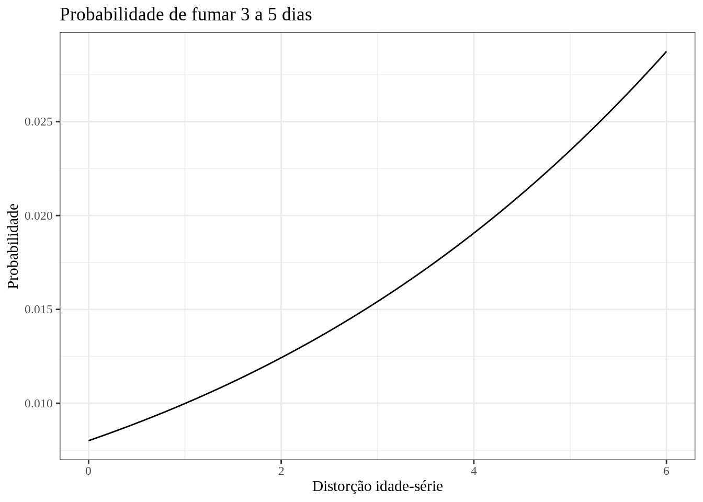
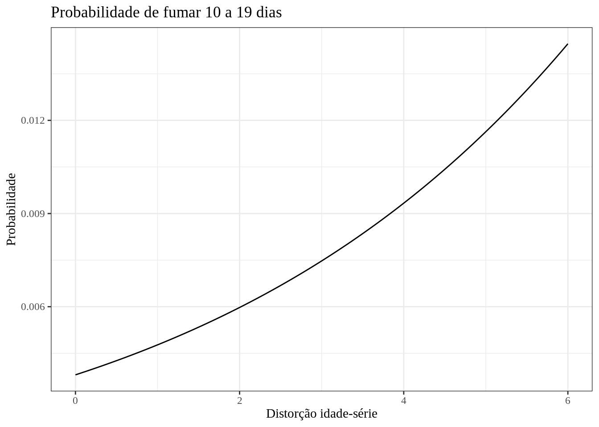
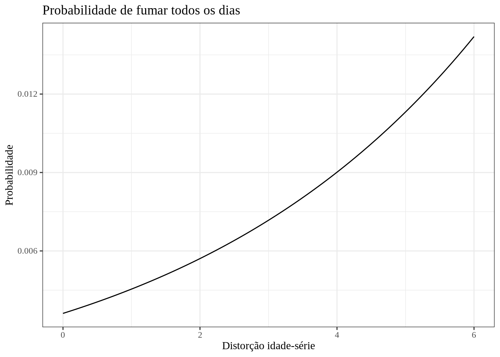

Code
data = utils::read.csv(file = "pense2019_microdados.csv")data = utils::read.csv(file = "pense2019_microdados.csv")library(janitor)
# Selecionando variáveis importantes e filtrando registros válidos.
clean_data = janitor::clean_names(data) |>
dplyr::rename(
tabagismo = b04003,
sexo = b01001a,
idade = b01003,
mes_aniversario = b01004,
ano_nascimento = b01005,
cor = b01002,
celular = b01014,
computador = b01015b,
internet = b01016,
carro = b01017,
moto = b01018a,
banheiro = b01019a,
escolaridade_mae = b01008b,
ano_escolar = b01021a,
atividade_fisica = b03006b,
bebida_alcoolica = b05004a,
dias_tristes = b12005,
sentimento_corpo = b11007,
frequencia_pais_problemas = b07004,
amigos_fumaram = b04016,
pais_fumam = b04006b,
escola_frequencia_violencia_colegas = b07012,
escola_acesso_internet = e01p09a,
escola_atividades_fisicas = e01p74,
escola_prevencao_uso_tabaco = e01p8506,
escola_consumo_cigarro_professores = e01p26a,
) |>
dplyr::select(
"regiao",
"uf",
"municipio_cap",
"escola",
"aluno",
"tabagismo",
"sexo",
"idade",
"mes_aniversario",
"ano_nascimento",
"cor",
"celular",
"computador",
"internet",
"carro",
"moto",
"banheiro",
"escolaridade_mae",
"ano_escolar",
"atividade_fisica",
"bebida_alcoolica",
"dias_tristes",
"sentimento_corpo",
"frequencia_pais_problemas",
"amigos_fumaram",
"pais_fumam",
"escola_frequencia_violencia_colegas",
"escola_acesso_internet",
"escola_atividades_fisicas",
"escola_prevencao_uso_tabaco",
"escola_consumo_cigarro_professores"
) |>
dplyr::filter(
if_all(
c(
"tabagismo",
"sexo",
"idade",
"cor",
"celular",
"computador",
"internet",
"mes_aniversario",
"ano_nascimento",
"carro",
"moto",
"banheiro",
"escolaridade_mae",
"ano_escolar",
"atividade_fisica",
"bebida_alcoolica",
"dias_tristes",
"sentimento_corpo",
"frequencia_pais_problemas",
"amigos_fumaram",
"pais_fumam",
"escola_frequencia_violencia_colegas",
"escola_acesso_internet",
"escola_atividades_fisicas",
"escola_prevencao_uso_tabaco",
"escola_consumo_cigarro_professores"
),
~ !.x %in% c(-2, 9, 99, -1, 9999))
) |>
dplyr::filter(escolaridade_mae != 8) |>
tidyr::drop_na()# Sexo.
# 1, se homem.
# 0, se mulher.
clean_data$sexo <- ifelse(clean_data$sexo == 1, 1, 0)
# Idade (Ano da pesquisa - ano de nascimento)
clean_data$idade <- 2019 - clean_data$ano_nascimento
# Cor
# 1, se Branco/Amarelo.
# 0, caso contrário.sudo apt -y install libfontconfig1-dev
clean_data$cor <- ifelse(clean_data$cor %in% c(1, 3), 1, 0)
# Celular
# 1, se tem celular.
# 0, caso contrário.
clean_data$celular <- ifelse(clean_data$celular == 1, 1, 0)
# Computador
# 1, se tem computador
# 0, caso contrário.
clean_data$computador <- ifelse(clean_data$computador == 1, 1, 0)
# Internet
# 1, se tem internet.
# 0, caso contrário.
clean_data$internet <- ifelse(clean_data$internet == 1, 1, 0)
# Carro
# 1, se tem carro
# 0, caso contrário.
clean_data$carro <- ifelse(clean_data$carro == 1, 1, 0)
# Moto
# 1, se tem moto.
# 0, caso contrário.
clean_data$moto <- ifelse(clean_data$moto == 1, 1, 0)
# Banheiro
# 0, não tem banheiro.
# 1, caso contrário (1 ou mais banheiros).
clean_data$banheiro <- ifelse(clean_data$banheiro == 1, 0, 1)
# Dummies escolaridade da mãe:
## mae_nao_estudou:
## 1, se não estudou.
## 0, caso contrário.
clean_data$mae_nao_estudou <- ifelse(clean_data$escolaridade_mae == 1, 1, 0)
## mae_concluiu_ensino_medio.
## 1, se concluiu pelo menos ensino médio.
## 0, caso contrário.
clean_data$mae_concluiu_pelo_menos_ensino_medio <- ifelse(clean_data$escolaridade_mae %in% c(5,6,7), 1, 0)
## mae_concluiu_ensino_fundamental.
## 1, se concluiu o ensino fundamental.
## 0, caso contrário.
clean_data$mae_concluiu_ensino_fundamental <- ifelse(clean_data$escolaridade_mae == 3, 1, 0)
## mae_concluiu_ensino_superior
## 1, se concluiu o ensino superior.
## 0, caso contrário.
clean_data$mae_concluiu_ensino_superior <- ifelse(clean_data$escolaridade_mae == 7, 1, 0)
# Distorção idade-série:
# Distorção idade-série = Idade - Anos de Estudo - 7.
# Anos de estudo := ano escolar + 5 (Nesta base de dados).
# Se distorção idade-serie < 0, 0.
clean_data$distorcao_idade_serie <- ifelse(
(clean_data$idade - (clean_data$ano_escolar + 5) - 7) < 0,
0,
(clean_data$idade - (clean_data$ano_escolar + 5) - 7)
)
# Dummies atividade física:
## af_nenhum_dia:
## 1, se não fez atividade física nenhum dia.
## 0, caso contrário.
clean_data$af_nenhum_dia <- ifelse(clean_data$atividade_fisica == 1, 1, 0)
## af_1_a_3_dias
## 1, se fez atividade física de 1 à 3 dias.
## 0, caso contrário.
clean_data$af_1_a_3_dias <- ifelse(
clean_data$atividade_fisica %in% c(2, 3, 4), 1, 0
)
## af_4_a_5_dias
## 1, se fez atividade física de 4 à 5 dias.
## 0, caso contrário.
clean_data$af_4_a_5_dias <- ifelse(
clean_data$atividade_fisica %in% c(5, 6), 1, 0
)
## af_6_a_7_dias
## 1, se fez atividade física de 6 à 7 dias.
## 0, caso contrário.
clean_data$af_6_a_7_dias <- ifelse(
clean_data$atividade_fisica %in% c(7, 8), 1, 0
)
# Dummies Bebida Alcoólica
## ba_nenhum_dia
## 1, se não ingeriu bebida alcóolica nos últimos 30 dias.
## 0, caso contrário.
clean_data$ba_nenhum_dia <- ifelse(clean_data$bebida_alcoolica == 1, 1, 0)
## ba_1_a_9_dias
## 1, se ingeriu bebida alcóolica de 1 a 9 dias, nos últimos 30 dias.
## 0, caso contrário.
clean_data$ba_1_a_9_dias <- ifelse(
clean_data$bebida_alcoolica %in% c(2, 3, 4), 1, 0
)
## ba_10_a_19_dias
## 1, se ingeriu bebida alcóolica de 10 a 19 dias, nos últimos 30 dias.
## 0, caso contrário.
clean_data$ba_10_a_19_dias <- ifelse(clean_data$bebida_alcoolica == 5, 1, 0)
## ba_20_a_todos_dias
## 1, se ingeriu bebida alcóolica de 20 a todos dias, nos últimos 30 dias.
## 0, caso contrário.
clean_data$ba_20_a_todos_dias <- ifelse(
clean_data$bebida_alcoolica %in% c(6, 7), 1, 0
)
# Dummy Saúde Mental
# 1, caso tenha se sentido triste "na maioria das vezes" ou "sempre".
# 0, caso contrário.
clean_data$triste_na_maioria_das_vezes <- ifelse(
clean_data$dias_tristes %in% c(1,2,3), 0, 1
)
# Dummies Sentimento em relação ao corpo
## corpo_satisfeito
## 1, caso esteja satifeito/muito satisfeito com o corpo.
## 0, caso contrário.
clean_data$corpo_satisfeito <- ifelse(
clean_data$sentimento_corpo %in% c(1,2), 1, 0
)
## corpo_insatisfeito
## 1, caso esteja insatisfeito/muito insatisfeito com o corpo.
## 0, caso contrário.
clean_data$corpo_insatisfeito <- ifelse(
clean_data$sentimento_corpo %in% c(4,5), 1, 0
)
## corpo_indiferente
## 1, caso esteja indiferente em relação ao corpo.
## 0, caso contrário.
clean_data$corpo_indiferente <- ifelse(clean_data$sentimento_corpo == 3, 1, 0)
# Dummies Compreensão familiar
## compreensao_nunca
## 1, se os pais não compreendem nunca.
## 0, caso contrário.
clean_data$compreensao_nunca <- ifelse(
clean_data$frequencia_pais_problemas == 1, 1, 0
)
## compreensao_as_vezes
## 1, se os pais compreendem as vezes
## 0, caso contrário.
clean_data$compreensao_as_vezes <- ifelse(
clean_data$frequencia_pais_problemas %in% c(2,3), 1, 0
)
## compreensao_sempre
## 1, se os pais compreendem sempre
## 0, caso contrário.
clean_data$compreensao_sempre <- ifelse(
clean_data$frequencia_pais_problemas %in% c(4,5), 1, 0
)
# Dummy Amigos fumantes
# 1, caso algum amigo tenha fumado na sua presença nos últimos 30 dias.
# 0, caso contrário.
clean_data$amigos_fumaram <- ifelse(clean_data$amigos_fumaram == 1, 1, 0)
# Dummy Pais fumantes
# 1, se algum deles fuma.
# 0, caso contrário.
clean_data$pais_fumam <- ifelse(clean_data$pais_fumam %in% c(2,3,4), 1, 0)
# Dummy Internet Escola
# 1, se tem internet para os alunos.
# 0, caso contrário.
clean_data$escola_acesso_internet <- ifelse(
clean_data$escola_acesso_internet == 1, 1, 0
)
# Dummy Atividade Física Escola
# 1, se tem prática de atividade física para os alunos.
# 0, caso contrário.
clean_data$escola_atividades_fisicas <- ifelse(
clean_data$escola_atividades_fisicas == 1, 1, 0
)
# Dummy Violência na escola
# 1, se o aluno foi agredido nos últimos 30 dias.
# 0, caso contrário.
clean_data$escola_agredido <- ifelse(
clean_data$escola_frequencia_violencia_colegas == 1, 0, 1
)
# Dummy Prevenção uso de Tabaco
# 1, se a escola fez alguma campanha de prevenção do
# uso de tabaco nos últimos 12 meses.
# 0, caso contrário.
clean_data$escola_prevencao_uso_tabaco <- ifelse(
clean_data$escola_prevencao_uso_tabaco == 1, 1, 0
)
# Dummy consumo de cigarro professores/funcionarios
# 1, se professores e/ou funcionários fumaram nas dependências da escola.
# 0, caso contrário.
clean_data$escola_consumo_cigarro_professores_e_ou_funcionarios <- ifelse(
clean_data$escola_consumo_cigarro_professores %in% c(1,2,3), 1, 0
)
# Transformando a variável dependente em um fator:
clean_data$tabagismo <- factor(as.character(clean_data$tabagismo))## Dataset após limpeza e inclusão de dummies
library(knitr)
kable(head(clean_data))| regiao | uf | municipio_cap | escola | aluno | tabagismo | sexo | idade | mes_aniversario | ano_nascimento | cor | celular | computador | internet | carro | moto | banheiro | escolaridade_mae | ano_escolar | atividade_fisica | bebida_alcoolica | dias_tristes | sentimento_corpo | frequencia_pais_problemas | amigos_fumaram | pais_fumam | escola_frequencia_violencia_colegas | escola_acesso_internet | escola_atividades_fisicas | escola_prevencao_uso_tabaco | escola_consumo_cigarro_professores | mae_nao_estudou | mae_concluiu_pelo_menos_ensino_medio | mae_concluiu_ensino_fundamental | mae_concluiu_ensino_superior | distorcao_idade_serie | af_nenhum_dia | af_1_a_3_dias | af_4_a_5_dias | af_6_a_7_dias | ba_nenhum_dia | ba_1_a_9_dias | ba_10_a_19_dias | ba_20_a_todos_dias | triste_na_maioria_das_vezes | corpo_satisfeito | corpo_insatisfeito | corpo_indiferente | compreensao_nunca | compreensao_as_vezes | compreensao_sempre | escola_agredido | escola_consumo_cigarro_professores_e_ou_funcionarios |
|---|---|---|---|---|---|---|---|---|---|---|---|---|---|---|---|---|---|---|---|---|---|---|---|---|---|---|---|---|---|---|---|---|---|---|---|---|---|---|---|---|---|---|---|---|---|---|---|---|---|---|---|---|
| 1 | 11 | 0 | 8 | 2 | 1 | 1 | 15 | 4 | 2004 | 1 | 1 | 1 | 1 | 1 | 1 | 1 | 5 | 3 | 8 | 2 | 3 | 2 | 5 | 1 | 1 | 1 | 1 | 1 | 1 | 4 | 0 | 1 | 0 | 0 | 0 | 0 | 0 | 0 | 1 | 0 | 1 | 0 | 0 | 0 | 1 | 0 | 0 | 0 | 0 | 1 | 0 | 0 |
| 1 | 11 | 0 | 8 | 15 | 1 | 1 | 16 | 10 | 2003 | 1 | 1 | 1 | 1 | 0 | 1 | 1 | 5 | 3 | 6 | 1 | 4 | 2 | 5 | 0 | 0 | 1 | 1 | 1 | 1 | 4 | 0 | 1 | 0 | 0 | 1 | 0 | 0 | 1 | 0 | 1 | 0 | 0 | 0 | 1 | 1 | 0 | 0 | 0 | 0 | 1 | 0 | 0 |
| 1 | 11 | 0 | 23 | 22 | 2 | 0 | 14 | 10 | 2005 | 0 | 1 | 1 | 1 | 1 | 1 | 1 | 4 | 3 | 5 | 1 | 5 | 4 | 4 | 1 | 0 | 1 | 0 | 1 | 0 | 4 | 0 | 0 | 0 | 0 | 0 | 0 | 0 | 1 | 0 | 1 | 0 | 0 | 0 | 1 | 0 | 1 | 0 | 0 | 0 | 1 | 0 | 0 |
| 1 | 11 | 0 | 8 | 6 | 1 | 0 | 16 | 12 | 2003 | 1 | 1 | 1 | 1 | 1 | 1 | 1 | 7 | 3 | 1 | 1 | 2 | 2 | 5 | 0 | 0 | 1 | 1 | 1 | 1 | 4 | 0 | 1 | 0 | 1 | 1 | 1 | 0 | 0 | 0 | 1 | 0 | 0 | 0 | 0 | 1 | 0 | 0 | 0 | 0 | 1 | 0 | 0 |
| 1 | 11 | 0 | 1 | 16 | 1 | 0 | 14 | 10 | 2005 | 0 | 1 | 0 | 1 | 1 | 0 | 1 | 4 | 3 | 5 | 1 | 5 | 4 | 4 | 0 | 0 | 1 | 0 | 1 | 1 | 4 | 0 | 0 | 0 | 0 | 0 | 0 | 0 | 1 | 0 | 1 | 0 | 0 | 0 | 1 | 0 | 1 | 0 | 0 | 0 | 1 | 0 | 0 |
| 1 | 11 | 0 | 24 | 7 | 1 | 1 | 13 | 2 | 2006 | 0 | 1 | 1 | 1 | 1 | 1 | 1 | 7 | 3 | 6 | 2 | 3 | 2 | 4 | 0 | 0 | 1 | 0 | 1 | 1 | 4 | 0 | 1 | 0 | 1 | 0 | 0 | 0 | 1 | 0 | 0 | 1 | 0 | 0 | 0 | 1 | 0 | 0 | 0 | 0 | 1 | 0 | 0 |
tabelas <- list()
for(i in colnames(clean_data)) {
exceptions <- c(
"regiao",
"uf",
"municipio_cap",
"escola",
"aluno",
"distorcao_idade_serie",
"tabagismo",
"mes_aniversario",
"ano_nascimento"
)
if(!i %in% exceptions){
tb <- table(clean_data[i])
fa <- as.data.frame(tb)
fr <- as.data.frame(round(prop.table(tb), 4))
df <- cbind(fa, fr["Freq"]*100)
colnames(df) <- c(i, "f.a", "f.r (%)")
tabelas[[i]] <- kable(df)
}
}tabelas[["sexo"]]| sexo | f.a | f.r (%) |
|---|---|---|
| 0 | 10091 | 49.43 |
| 1 | 10323 | 50.57 |
tabelas[["idade"]]| idade | f.a | f.r (%) |
|---|---|---|
| 11 | 41 | 0.20 |
| 12 | 4 | 0.02 |
| 13 | 561 | 2.75 |
| 14 | 2128 | 10.42 |
| 15 | 3339 | 16.36 |
| 16 | 4292 | 21.02 |
| 17 | 5342 | 26.17 |
| 18 | 3209 | 15.72 |
| 19 | 1498 | 7.34 |
tabelas[["cor"]]| cor | f.a | f.r (%) |
|---|---|---|
| 0 | 12255 | 60.03 |
| 1 | 8159 | 39.97 |
tabelas[["celular"]]| celular | f.a | f.r (%) |
|---|---|---|
| 0 | 2559 | 12.54 |
| 1 | 17855 | 87.46 |
tabelas[["computador"]]| computador | f.a | f.r (%) |
|---|---|---|
| 0 | 7556 | 37.01 |
| 1 | 12858 | 62.99 |
tabelas[["internet"]]| internet | f.a | f.r (%) |
|---|---|---|
| 0 | 2012 | 9.86 |
| 1 | 18402 | 90.14 |
tabelas[["carro"]]| carro | f.a | f.r (%) |
|---|---|---|
| 0 | 7933 | 38.86 |
| 1 | 12481 | 61.14 |
tabelas[["moto"]]| moto | f.a | f.r (%) |
|---|---|---|
| 0 | 12581 | 61.63 |
| 1 | 7833 | 38.37 |
tabelas[["banheiro"]]| banheiro | f.a | f.r (%) |
|---|---|---|
| 0 | 437 | 2.14 |
| 1 | 19977 | 97.86 |
tabelas[["escolaridade_mae"]]| escolaridade_mae | f.a | f.r (%) |
|---|---|---|
| 1 | 883 | 4.33 |
| 2 | 3912 | 19.16 |
| 3 | 1298 | 6.36 |
| 4 | 1738 | 8.51 |
| 5 | 4835 | 23.68 |
| 6 | 1720 | 8.43 |
| 7 | 6028 | 29.53 |
tabelas[["ano_escolar"]]| ano_escolar | f.a | f.r (%) |
|---|---|---|
| 1 | 20 | 0.10 |
| 2 | 705 | 3.45 |
| 3 | 2029 | 9.94 |
| 4 | 3028 | 14.83 |
| 5 | 4839 | 23.70 |
| 6 | 4746 | 23.25 |
| 7 | 5047 | 24.72 |
tabelas[["atividade_fisica"]]| atividade_fisica | f.a | f.r (%) |
|---|---|---|
| 1 | 7885 | 38.63 |
| 2 | 2092 | 10.25 |
| 3 | 2352 | 11.52 |
| 4 | 2124 | 10.40 |
| 5 | 1343 | 6.58 |
| 6 | 1923 | 9.42 |
| 7 | 947 | 4.64 |
| 8 | 1748 | 8.56 |
tabelas[["bebida_alcoolica"]]| bebida_alcoolica | f.a | f.r (%) |
|---|---|---|
| 1 | 7616 | 37.31 |
| 2 | 5892 | 28.86 |
| 3 | 3012 | 14.75 |
| 4 | 1927 | 9.44 |
| 5 | 1261 | 6.18 |
| 6 | 411 | 2.01 |
| 7 | 295 | 1.45 |
tabelas[["dias_tristes"]]| dias_tristes | f.a | f.r (%) |
|---|---|---|
| 1 | 1254 | 6.14 |
| 2 | 3669 | 17.97 |
| 3 | 6680 | 32.72 |
| 4 | 5085 | 24.91 |
| 5 | 3726 | 18.25 |
tabelas[["sentimento_corpo"]]| sentimento_corpo | f.a | f.r (%) |
|---|---|---|
| 1 | 4135 | 20.26 |
| 2 | 7226 | 35.40 |
| 3 | 2443 | 11.97 |
| 4 | 4421 | 21.66 |
| 5 | 2189 | 10.72 |
tabelas[["frequencia_pais_problemas"]]| frequencia_pais_problemas | f.a | f.r (%) |
|---|---|---|
| 1 | 4423 | 21.67 |
| 2 | 4471 | 21.90 |
| 3 | 4574 | 22.41 |
| 4 | 3873 | 18.97 |
| 5 | 3073 | 15.05 |
tabelas[["amigos_fumaram"]]| amigos_fumaram | f.a | f.r (%) |
|---|---|---|
| 0 | 8721 | 42.72 |
| 1 | 11693 | 57.28 |
tabelas[["pais_fumam"]]| pais_fumam | f.a | f.r (%) |
|---|---|---|
| 0 | 14307 | 70.08 |
| 1 | 6107 | 29.92 |
tabelas[["escola_frequencia_violencia_colegas"]]| escola_frequencia_violencia_colegas | f.a | f.r (%) |
|---|---|---|
| 1 | 17304 | 84.77 |
| 2 | 1487 | 7.28 |
| 3 | 1623 | 7.95 |
tabelas[["escola_acesso_internet"]]| escola_acesso_internet | f.a | f.r (%) |
|---|---|---|
| 0 | 6932 | 33.96 |
| 1 | 13482 | 66.04 |
tabelas[["escola_atividades_fisicas"]]| escola_atividades_fisicas | f.a | f.r (%) |
|---|---|---|
| 0 | 697 | 3.41 |
| 1 | 19717 | 96.59 |
tabelas[["escola_prevencao_uso_tabaco"]]| escola_prevencao_uso_tabaco | f.a | f.r (%) |
|---|---|---|
| 0 | 10781 | 52.81 |
| 1 | 9633 | 47.19 |
tabelas[["escola_consumo_cigarro_professores"]]| escola_consumo_cigarro_professores | f.a | f.r (%) |
|---|---|---|
| 1 | 2888 | 14.15 |
| 2 | 737 | 3.61 |
| 3 | 1109 | 5.43 |
| 4 | 15680 | 76.81 |
tabelas[["mae_nao_estudou"]]| mae_nao_estudou | f.a | f.r (%) |
|---|---|---|
| 0 | 19531 | 95.67 |
| 1 | 883 | 4.33 |
tabelas[["mae_concluiu_pelo_menos_ensino_medio"]]| mae_concluiu_pelo_menos_ensino_medio | f.a | f.r (%) |
|---|---|---|
| 0 | 7831 | 38.36 |
| 1 | 12583 | 61.64 |
tabelas[["mae_concluiu_ensino_fundamental"]]| mae_concluiu_ensino_fundamental | f.a | f.r (%) |
|---|---|---|
| 0 | 19116 | 93.64 |
| 1 | 1298 | 6.36 |
tabelas[["mae_concluiu_ensino_superior"]]| mae_concluiu_ensino_superior | f.a | f.r (%) |
|---|---|---|
| 0 | 14386 | 70.47 |
| 1 | 6028 | 29.53 |
tabelas[["af_nenhum_dia"]]| af_nenhum_dia | f.a | f.r (%) |
|---|---|---|
| 0 | 12529 | 61.37 |
| 1 | 7885 | 38.63 |
tabelas[["af_1_a_3_dias"]]| af_1_a_3_dias | f.a | f.r (%) |
|---|---|---|
| 0 | 13846 | 67.83 |
| 1 | 6568 | 32.17 |
tabelas[["af_4_a_5_dias"]]| af_4_a_5_dias | f.a | f.r (%) |
|---|---|---|
| 0 | 17148 | 84 |
| 1 | 3266 | 16 |
tabelas[["af_6_a_7_dias"]]| af_6_a_7_dias | f.a | f.r (%) |
|---|---|---|
| 0 | 17719 | 86.8 |
| 1 | 2695 | 13.2 |
tabelas[["ba_nenhum_dia"]]| ba_nenhum_dia | f.a | f.r (%) |
|---|---|---|
| 0 | 12798 | 62.69 |
| 1 | 7616 | 37.31 |
tabelas[["ba_1_a_9_dias"]]| ba_1_a_9_dias | f.a | f.r (%) |
|---|---|---|
| 0 | 9583 | 46.94 |
| 1 | 10831 | 53.06 |
tabelas[["ba_10_a_19_dias"]]| ba_10_a_19_dias | f.a | f.r (%) |
|---|---|---|
| 0 | 19153 | 93.82 |
| 1 | 1261 | 6.18 |
tabelas[["ba_20_a_todos_dias"]]| ba_20_a_todos_dias | f.a | f.r (%) |
|---|---|---|
| 0 | 19708 | 96.54 |
| 1 | 706 | 3.46 |
tabelas[["triste_na_maioria_das_vezes"]]| triste_na_maioria_das_vezes | f.a | f.r (%) |
|---|---|---|
| 0 | 11603 | 56.84 |
| 1 | 8811 | 43.16 |
tabelas[["corpo_satisfeito"]]| corpo_satisfeito | f.a | f.r (%) |
|---|---|---|
| 0 | 9053 | 44.35 |
| 1 | 11361 | 55.65 |
tabelas[["corpo_insatisfeito"]]| corpo_insatisfeito | f.a | f.r (%) |
|---|---|---|
| 0 | 13804 | 67.62 |
| 1 | 6610 | 32.38 |
tabelas[["corpo_indiferente"]]| corpo_indiferente | f.a | f.r (%) |
|---|---|---|
| 0 | 17971 | 88.03 |
| 1 | 2443 | 11.97 |
tabelas[["compreensao_nunca"]]| compreensao_nunca | f.a | f.r (%) |
|---|---|---|
| 0 | 15991 | 78.33 |
| 1 | 4423 | 21.67 |
tabelas[["compreensao_as_vezes"]]| compreensao_as_vezes | f.a | f.r (%) |
|---|---|---|
| 0 | 11369 | 55.69 |
| 1 | 9045 | 44.31 |
tabelas[["compreensao_sempre"]]| compreensao_sempre | f.a | f.r (%) |
|---|---|---|
| 0 | 13468 | 65.97 |
| 1 | 6946 | 34.03 |
tabelas[["escola_agredido"]]| escola_agredido | f.a | f.r (%) |
|---|---|---|
| 0 | 17304 | 84.77 |
| 1 | 3110 | 15.23 |
tabelas[["escola_consumo_cigarro_professores_e_ou_funcionarios"]]| escola_consumo_cigarro_professores_e_ou_funcionarios | f.a | f.r (%) |
|---|---|---|
| 0 | 15680 | 76.81 |
| 1 | 4734 | 23.19 |
tb <- table(clean_data$tabagismo)
fa <- as.data.frame(tb)
fr <- as.data.frame(round(prop.table(tb), 4))
df <- cbind(fa, fr["Freq"]*100)
colnames(df) <- c("tabagismo", "f.a", "f.r (%)")
kable(df)| tabagismo | f.a | f.r (%) |
|---|---|---|
| 1 | 14619 | 71.61 |
| 2 | 2876 | 14.09 |
| 3 | 895 | 4.38 |
| 4 | 525 | 2.57 |
| 5 | 545 | 2.67 |
| 6 | 317 | 1.55 |
| 7 | 637 | 3.12 |
for(i in colnames(clean_data)) {
columns <- c(
"idade",
"distorcao_idade_serie"
)
if(i %in% columns){
tb <- table(clean_data[i])
fa <- as.data.frame(tb)
fr <- as.data.frame(round(prop.table(tb), 4))
df <- cbind(fa, fr["Freq"]*100)
colnames(df) <- c(i, "f.a", "f.r (%)")
tabelas[[i]] <- kable(df)
}
}tabelas[["idade"]]| idade | f.a | f.r (%) |
|---|---|---|
| 11 | 41 | 0.20 |
| 12 | 4 | 0.02 |
| 13 | 561 | 2.75 |
| 14 | 2128 | 10.42 |
| 15 | 3339 | 16.36 |
| 16 | 4292 | 21.02 |
| 17 | 5342 | 26.17 |
| 18 | 3209 | 15.72 |
| 19 | 1498 | 7.34 |
tabelas[["distorcao_idade_serie"]]| distorcao_idade_serie | f.a | f.r (%) |
|---|---|---|
| 0 | 18559 | 90.91 |
| 1 | 1345 | 6.59 |
| 2 | 388 | 1.90 |
| 3 | 86 | 0.42 |
| 4 | 24 | 0.12 |
| 5 | 6 | 0.03 |
| 6 | 6 | 0.03 |
A amostra restante (alunos e escolas Não Sem resposta is é a abordagem mais utilizada para analisar dados ordinais hierárquicos. Para um resultado de nível \(k\), a probabilidade cumulativa de sucesso nas divisões cumulativas \(K-1\) é baseado em um modelo logit cumulativo para a respostas, \(R_{ij}\), para o aluno \(i\) na escola \(j\). Utilizando a terminologia de RAUDENBUSH; BRYK (2002), o modelo é caracterizado por nível, da seguinte forma:
\[ \text{Nível 1:} \hspace{1cm} \eta_{kij} = \ln{\Biggl(\frac{P(R_{ij} \leq k)}{P(R_{ij} \geq k)}\Biggl)} = \beta_{0j} + \sum_{q=1}^{Q} \beta_{qij} + \sum_{k=2}^{K-1} D_{kij}\rho_{k} \]
\[ \text{Nível 2:} \hspace{1cm} \beta_{qj} = \gamma_{q0} + \sum_{s=1}^{S_{q}} \gamma_{qs} W_{sj} + \mu_{qj} \]
Neste modelo, \(\eta_{kij}\) é o preditor logístico para a comparação cumulativa \(k\) e para o aluno \(i\) na escola \(j\). Como o logit é o logaritmo natural da razão de chances (log-odds) da probabilidade de sucesso, podemos utilizar a relação abaixo para obter a razão de chances (odds), \(\pi_{kij}\):
\[ \pi_{kij}(x) = \frac{\exp(\eta_{kij})}{1 + \exp(\eta_{kij})} = \frac{odds_{(kij)}}{1 + odds_{(kij)}} \]
Onde \(x\) é um vetor de variáveis explicativas de nível 1 e nível 2.
Para cada aluno, uma série de probabilidades \(K-1\) é determinada a partir do modelo, cada uma representando a probabilidade da resposta estar em ou abaixo de uma determinada categoria, condicionada ao conjunto de preditores (O’CONNELL, 2010).
A \(K\)-ésima probabilidade será sempre igual a 1, uma vez que todas as respostas devem estar em ou abaixo do nível \(K\) nos dados. Para cada unidade ou grupo de nível 2, a equação de regressão no nível 1, fornece um conjunto único de interceptos e coeficientes de regressão. A suposição de probabilidades proporcionais sustenta que, em todas as divisões cumulativas \(K-1\) dos dados, os coeficientes de inclinações são constantes, embora variem de grupo para grupo. No nível 2, a variabilidade nos interceptos e coeficientes de inclinação entre os grupos, é capturada pelos resíduos do nível 2, \(\mu_{qj}\) (O’CONNELL, 2010).
A variação nas estimativas de parâmetros de regressão aleatória pode ser modelada usando preditores do nível 2, \(W_{sj}\), que não precisam ser os mesmos para cada coeficiente de regressão do nível 1. Os \(\gamma_{qs}\) do nível 2 são os coeficientes de regressão fixos. A medida em que a explicação dos coeficientes aleatórios de nível 1 melhora com a adição de preditores apropriados de nível 2, os resíduos no nível 2 tornam-se menores. Esses resíduos são considerados normalmente distribuídos com a matriz var-cov \(T\): \(\mu_{1j} \sim N(0, T)\) (O’CONNELL, 2010).
Para ajustar o modelo, podemos utilizar o pacote ‘ordinal’ (CHRISTENSEN, 2015) do R que contém a função clmm() (Cumulative Link Mixed-Effects), utilizado e recomendado por BOUSQUET et al. (2017) e AGRESTI (2002).
Estimando o Cumulative Link Mixed-Effects nulo (intercept-only):
library(ordinal)
logit_nulo <- clmm(tabagismo ~ 1 + (1 | escola), data=clean_data)
summary(logit_nulo)Cumulative Link Mixed Model fitted with the Laplace approximation
formula: tabagismo ~ 1 + (1 | escola)
data: clean_data
link threshold nobs logLik AIC niter max.grad cond.H
logit flexible 20414 -20741.76 41497.52 624(1530) 2.02e-02 2.4e+04
Random effects:
Groups Name Variance Std.Dev.
escola (Intercept) 0.002851 0.05339
Number of groups: escola 69
No Coefficients
Threshold coefficients:
Estimate Std. Error z value
1|2 0.91724 0.02590 35.41
2|3 1.78292 0.02843 62.72
3|4 2.19909 0.03082 71.34
4|5 2.52756 0.03344 75.58
5|6 3.00791 0.03867 77.79
6|7 3.42800 0.04489 76.36Estimando o Cumulative Link Mixed-Effects apenas com preditores de nível 1 (aluno):
logit_ordenado <- clm(
tabagismo ~ sexo + idade + cor + celular + computador +
internet + carro + moto + banheiro +
mae_nao_estudou +
mae_concluiu_ensino_fundamental +
distorcao_idade_serie + af_1_a_3_dias + af_4_a_5_dias +
af_6_a_7_dias + ba_1_a_9_dias + ba_10_a_19_dias +
ba_20_a_todos_dias +
triste_na_maioria_das_vezes + corpo_indiferente +
corpo_insatisfeito + compreensao_sempre +
compreensao_as_vezes + pais_fumam + amigos_fumaram +
escola_acesso_internet +
escola_agredido +
escola_atividades_fisicas +
escola_prevencao_uso_tabaco +
escola_consumo_cigarro_professores_e_ou_funcionarios,
data = clean_data
)
summary(logit_ordenado)formula:
tabagismo ~ sexo + idade + cor + celular + computador + internet + carro + moto + banheiro + mae_nao_estudou + mae_concluiu_ensino_fundamental + distorcao_idade_serie + af_1_a_3_dias + af_4_a_5_dias + af_6_a_7_dias + ba_1_a_9_dias + ba_10_a_19_dias + ba_20_a_todos_dias + triste_na_maioria_das_vezes + corpo_indiferente + corpo_insatisfeito + compreensao_sempre + compreensao_as_vezes + pais_fumam + amigos_fumaram + escola_acesso_internet + escola_agredido + escola_atividades_fisicas + escola_prevencao_uso_tabaco + escola_consumo_cigarro_professores_e_ou_funcionarios
data: clean_data
link threshold nobs logLik AIC niter max.grad cond.H
logit flexible 20414 -18399.70 36871.39 11(0) 2.22e-09 3.6e+05
Coefficients:
Estimate Std. Error
sexo 0.379829 0.038024
idade -0.024441 0.011742
cor 0.017020 0.035219
celular -0.278878 0.052192
computador -0.009112 0.040419
internet -0.183583 0.061321
carro 0.038323 0.039099
moto -0.065001 0.034443
banheiro -0.273219 0.112307
mae_nao_estudou 0.239821 0.078579
mae_concluiu_ensino_fundamental 0.106184 0.067052
distorcao_idade_serie 0.229921 0.036282
af_1_a_3_dias -0.028562 0.040485
af_4_a_5_dias -0.085357 0.050704
af_6_a_7_dias -0.084001 0.054911
ba_1_a_9_dias 1.026361 0.042760
ba_10_a_19_dias 1.816799 0.066597
ba_20_a_todos_dias 2.205858 0.083179
triste_na_maioria_das_vezes 0.161363 0.038108
corpo_indiferente 0.049781 0.053710
corpo_insatisfeito 0.022728 0.040658
compreensao_sempre -0.229090 0.047118
compreensao_as_vezes -0.173015 0.043119
pais_fumam 0.224801 0.035782
amigos_fumaram 1.750541 0.042848
escola_acesso_internet -0.021976 0.035425
escola_agredido 0.122869 0.045053
escola_atividades_fisicas -0.021317 0.090283
escola_prevencao_uso_tabaco 0.053172 0.033159
escola_consumo_cigarro_professores_e_ou_funcionarios -0.033815 0.039504
z value Pr(>|z|)
sexo 9.989 < 2e-16 ***
idade -2.082 0.03738 *
cor 0.483 0.62891
celular -5.343 9.13e-08 ***
computador -0.225 0.82164
internet -2.994 0.00276 **
carro 0.980 0.32701
moto -1.887 0.05913 .
banheiro -2.433 0.01498 *
mae_nao_estudou 3.052 0.00227 **
mae_concluiu_ensino_fundamental 1.584 0.11328
distorcao_idade_serie 6.337 2.34e-10 ***
af_1_a_3_dias -0.705 0.48050
af_4_a_5_dias -1.683 0.09229 .
af_6_a_7_dias -1.530 0.12608
ba_1_a_9_dias 24.003 < 2e-16 ***
ba_10_a_19_dias 27.280 < 2e-16 ***
ba_20_a_todos_dias 26.519 < 2e-16 ***
triste_na_maioria_das_vezes 4.234 2.29e-05 ***
corpo_indiferente 0.927 0.35400
corpo_insatisfeito 0.559 0.57615
compreensao_sempre -4.862 1.16e-06 ***
compreensao_as_vezes -4.012 6.01e-05 ***
pais_fumam 6.282 3.33e-10 ***
amigos_fumaram 40.854 < 2e-16 ***
escola_acesso_internet -0.620 0.53502
escola_agredido 2.727 0.00639 **
escola_atividades_fisicas -0.236 0.81335
escola_prevencao_uso_tabaco 1.604 0.10881
escola_consumo_cigarro_professores_e_ou_funcionarios -0.856 0.39200
---
Signif. codes: 0 '***' 0.001 '**' 0.01 '*' 0.05 '.' 0.1 ' ' 1
Threshold coefficients:
Estimate Std. Error z value
1|2 2.0897 0.2409 8.675
2|3 3.1262 0.2415 12.946
3|4 3.5992 0.2419 14.876
4|5 3.9634 0.2424 16.350
5|6 4.4836 0.2433 18.429
6|7 4.9298 0.2444 20.173Estimando o Cumulative Link Mixed-Effects completo, com variáveis do nível 1 e 2 (aluno e escola), captando também, efeitos aleatórios do nível 2:
logit_ordenado_multinivel <- clmm(
tabagismo ~ sexo + idade + cor + celular + computador +
internet + carro + moto + banheiro +
mae_nao_estudou +
mae_concluiu_ensino_fundamental +
distorcao_idade_serie + af_1_a_3_dias + af_4_a_5_dias +
af_6_a_7_dias + ba_1_a_9_dias + ba_10_a_19_dias +
ba_20_a_todos_dias +
triste_na_maioria_das_vezes + corpo_indiferente +
corpo_insatisfeito + compreensao_sempre +
compreensao_as_vezes + pais_fumam + amigos_fumaram +
escola_agredido +
(1|escola) + escola_acesso_internet +
escola_atividades_fisicas +
escola_prevencao_uso_tabaco +
escola_consumo_cigarro_professores_e_ou_funcionarios,
data = clean_data
)
summary(logit_ordenado_multinivel)Cumulative Link Mixed Model fitted with the Laplace approximation
formula: tabagismo ~ sexo + idade + cor + celular + computador + internet +
carro + moto + banheiro + mae_nao_estudou + mae_concluiu_ensino_fundamental +
distorcao_idade_serie + af_1_a_3_dias + af_4_a_5_dias + af_6_a_7_dias +
ba_1_a_9_dias + ba_10_a_19_dias + ba_20_a_todos_dias + triste_na_maioria_das_vezes +
corpo_indiferente + corpo_insatisfeito + compreensao_sempre +
compreensao_as_vezes + pais_fumam + amigos_fumaram + escola_agredido +
(1 | escola) + escola_acesso_internet + escola_atividades_fisicas +
escola_prevencao_uso_tabaco + escola_consumo_cigarro_professores_e_ou_funcionarios
data: clean_data
link threshold nobs logLik AIC niter max.grad cond.H
logit flexible 20414 -18400.89 36875.78 8429(17869) 3.31e+01 2.6e+05
Random effects:
Groups Name Variance Std.Dev.
escola (Intercept) 0.001804 0.04247
Number of groups: escola 69
Coefficients:
Estimate Std. Error
sexo 0.38523 0.03804
idade -0.02393 0.01178
cor 0.01964 0.03523
celular -0.28587 0.05219
computador -0.01415 0.04044
internet -0.18120 0.06134
carro 0.04084 0.03913
moto -0.05843 0.03445
banheiro -0.27480 0.11234
mae_nao_estudou 0.23273 0.07864
mae_concluiu_ensino_fundamental 0.09935 0.06713
distorcao_idade_serie 0.22162 0.03636
af_1_a_3_dias -0.02817 0.04050
af_4_a_5_dias -0.08697 0.05073
af_6_a_7_dias -0.08264 0.05492
ba_1_a_9_dias 1.02315 0.04275
ba_10_a_19_dias 1.81145 0.06663
ba_20_a_todos_dias 2.21068 0.08318
triste_na_maioria_das_vezes 0.16409 0.03812
corpo_indiferente 0.05554 0.05369
corpo_insatisfeito 0.02435 0.04068
compreensao_sempre -0.23032 0.04713
compreensao_as_vezes -0.17440 0.04313
pais_fumam 0.22877 0.03578
amigos_fumaram 1.75319 0.04287
escola_agredido 0.12577 0.04505
escola_acesso_internet -0.02232 0.03548
escola_atividades_fisicas -0.03282 0.09024
escola_prevencao_uso_tabaco 0.04631 0.03326
escola_consumo_cigarro_professores_e_ou_funcionarios -0.03400 0.03957
z value Pr(>|z|)
sexo 10.127 < 2e-16 ***
idade -2.031 0.04226 *
cor 0.558 0.57717
celular -5.478 4.30e-08 ***
computador -0.350 0.72629
internet -2.954 0.00314 **
carro 1.044 0.29671
moto -1.696 0.08982 .
banheiro -2.446 0.01444 *
mae_nao_estudou 2.959 0.00308 **
mae_concluiu_ensino_fundamental 1.480 0.13889
distorcao_idade_serie 6.096 1.09e-09 ***
af_1_a_3_dias -0.695 0.48675
af_4_a_5_dias -1.714 0.08646 .
af_6_a_7_dias -1.505 0.13236
ba_1_a_9_dias 23.933 < 2e-16 ***
ba_10_a_19_dias 27.187 < 2e-16 ***
ba_20_a_todos_dias 26.577 < 2e-16 ***
triste_na_maioria_das_vezes 4.305 1.67e-05 ***
corpo_indiferente 1.034 0.30091
corpo_insatisfeito 0.599 0.54942
compreensao_sempre -4.887 1.02e-06 ***
compreensao_as_vezes -4.044 5.25e-05 ***
pais_fumam 6.393 1.63e-10 ***
amigos_fumaram 40.898 < 2e-16 ***
escola_agredido 2.792 0.00524 **
escola_acesso_internet -0.629 0.52925
escola_atividades_fisicas -0.364 0.71608
escola_prevencao_uso_tabaco 1.392 0.16379
escola_consumo_cigarro_professores_e_ou_funcionarios -0.859 0.39017
---
Signif. codes: 0 '***' 0.001 '**' 0.01 '*' 0.05 '.' 0.1 ' ' 1
Threshold coefficients:
Estimate Std. Error z value
1|2 2.0815 0.2415 8.619
2|3 3.1191 0.2421 12.884
3|4 3.5927 0.2426 14.812
4|5 3.9573 0.2430 16.284
5|6 4.4786 0.2439 18.362
6|7 4.9251 0.2450 20.103O Coeficiente de Correlação Intraclasse (ICC) fornece uma avaliação de quanta variabilidade nas respostas está no nível do grupo. Quando os dados são dicotômicos, a variabilidade dentro do grupo é definida pela distribuição amostral dos dados, normalmente a distribuição de Bernoulli. Quando o modelo de distribuição logística é aplicado, assume-se que os resíduos de nível um seguem a distribuição logística padrão, que tem uma média de 0 e uma variância de \(\pi^2/3 = 3,29\) (O’CONNELL, 2010):
\[ \text{ICC} = \frac{Var(\mu_{qj})}{Var(\mu_{qj}) + 3,29} \]
Ou seja, o ICC é a proporção entre a variância a nível de escola \(Var(\mu_{qj})\) e a variância total, dos dois níveis.
ICC = 0.001804/(0.001804 + 3.29)
ICC[1] 0.0005480278O ICC pode assumir valores entre 0 e 1. Quanto mais próximo de 0, quer dizer que menos ocorre variância dos alunos entre as escolas, ou seja, a probabilidade de ter algum nível de tabagismo independe da escola em que o aluno está inserido. Nessa situação, deve-se utilizar modelos convencionais, considerando apenas um nível. Como \(\text{ICC} = 0,0005\), quer dizer que apenas \(0,05\%\) das variações na probabilidade de ter algum nível de tabagismo deve-se às heterogeneidades da escola. O que indica que deve-se utilizar modelos convencionais.
O LR test (Likelihood-ratio test ou Teste da razão de verossimilhanças) avalia a qualidade do ajuste de dois modelos estatísticos concorrentes com base na razão de suas verossimilhanças. Se a hipótese nula não for rejeitada, significa que ambos os modelos não se diferem de forma significativa.
anova(logit_ordenado_multinivel, logit_ordenado)Likelihood ratio tests of cumulative link models:
formula:
logit_ordenado tabagismo ~ sexo + idade + cor + celular + computador + internet + carro + moto + banheiro + mae_nao_estudou + mae_concluiu_ensino_fundamental + distorcao_idade_serie + af_1_a_3_dias + af_4_a_5_dias + af_6_a_7_dias + ba_1_a_9_dias + ba_10_a_19_dias + ba_20_a_todos_dias + triste_na_maioria_das_vezes + corpo_indiferente + corpo_insatisfeito + compreensao_sempre + compreensao_as_vezes + pais_fumam + amigos_fumaram + escola_acesso_internet + escola_agredido + escola_atividades_fisicas + escola_prevencao_uso_tabaco + escola_consumo_cigarro_professores_e_ou_funcionarios
logit_ordenado_multinivel tabagismo ~ sexo + idade + cor + celular + computador + internet + carro + moto + banheiro + mae_nao_estudou + mae_concluiu_ensino_fundamental + distorcao_idade_serie + af_1_a_3_dias + af_4_a_5_dias + af_6_a_7_dias + ba_1_a_9_dias + ba_10_a_19_dias + ba_20_a_todos_dias + triste_na_maioria_das_vezes + corpo_indiferente + corpo_insatisfeito + compreensao_sempre + compreensao_as_vezes + pais_fumam + amigos_fumaram + escola_agredido + (1 | escola) + escola_acesso_internet + escola_atividades_fisicas + escola_prevencao_uso_tabaco + escola_consumo_cigarro_professores_e_ou_funcionarios
link: threshold:
logit_ordenado logit flexible
logit_ordenado_multinivel logit flexible
no.par AIC logLik LR.stat df Pr(>Chisq)
logit_ordenado 36 36871 -18400
logit_ordenado_multinivel 37 36876 -18401 -2.3877 1 1Como \(p > 0,05\), aceitamos a hipótese nula e optamos pelo modelo mais simples, já que o ICC também foi inferior à \(0,1\).
Razão de chance para cada preditor com intervalo de confiança de \(5\%\):
ci <- confint(logit_ordenado)
round(exp(
cbind(
OR = tail(
logit_ordenado$coefficients,
n=(length(logit_ordenado$coefficients) - 6)
),
ci
)
), 2) OR 2.5 % 97.5 %
sexo 1.46 1.36 1.58
idade 0.98 0.95 1.00
cor 1.02 0.95 1.09
celular 0.76 0.68 0.84
computador 0.99 0.92 1.07
internet 0.83 0.74 0.94
carro 1.04 0.96 1.12
moto 0.94 0.88 1.00
banheiro 0.76 0.61 0.95
mae_nao_estudou 1.27 1.09 1.48
mae_concluiu_ensino_fundamental 1.11 0.97 1.27
distorcao_idade_serie 1.26 1.17 1.35
af_1_a_3_dias 0.97 0.90 1.05
af_4_a_5_dias 0.92 0.83 1.01
af_6_a_7_dias 0.92 0.83 1.02
ba_1_a_9_dias 2.79 2.57 3.04
ba_10_a_19_dias 6.15 5.40 7.01
ba_20_a_todos_dias 9.08 7.71 10.68
triste_na_maioria_das_vezes 1.18 1.09 1.27
corpo_indiferente 1.05 0.95 1.17
corpo_insatisfeito 1.02 0.94 1.11
compreensao_sempre 0.80 0.73 0.87
compreensao_as_vezes 0.84 0.77 0.92
pais_fumam 1.25 1.17 1.34
amigos_fumaram 5.76 5.30 6.27
escola_acesso_internet 0.98 0.91 1.05
escola_agredido 1.13 1.03 1.23
escola_atividades_fisicas 0.98 0.82 1.17
escola_prevencao_uso_tabaco 1.05 0.99 1.13
escola_consumo_cigarro_professores_e_ou_funcionarios 0.97 0.89 1.04new_df <- data.frame(
"sexo" = rep(1, 100),
"idade" = rep(17, 100),
"cor" = rep(1, 100),
"celular" = rep(1, 100),
"computador" = rep(1, 100),
"internet" = rep(1, 100),
"carro" = rep(0, 100),
"moto" = rep(0, 100),
"banheiro" = rep(1, 100),
"mae_nao_estudou" = rep(1, 100),
"mae_concluiu_ensino_fundamental" = rep(0, 100),
"distorcao_idade_serie" = seq(from=0, to=6, length.out = 100),
"af_1_a_3_dias" = rep(0, 100),
"af_4_a_5_dias" = rep(0, 100),
"af_6_a_7_dias" = rep(0, 100),
"ba_1_a_9_dias" = rep(0, 100),
"ba_10_a_19_dias" = rep(0, 100),
"ba_20_a_todos_dias" = rep(0, 100),
"triste_na_maioria_das_vezes" = rep(0, 100),
"corpo_indiferente" = rep(1, 100),
"corpo_insatisfeito" = rep(0, 100),
"compreensao_sempre" = rep(0, 100),
"compreensao_as_vezes" = rep(1, 100),
"pais_fumam" = rep(0, 100),
"amigos_fumaram" = rep(0, 100),
"escola_acesso_internet" = rep(1, 100),
"escola_agredido" = rep(0, 100),
"escola_atividades_fisicas" = rep(1, 100),
"escola_prevencao_uso_tabaco" = rep(0, 100),
"escola_consumo_cigarro_professores_e_ou_funcionarios" = rep(0, 100)
)library(reshape2)
new_df <- cbind(new_df, predict(logit_ordenado, new_df, type="prob"))library(ggplot2)
library(extrafont)Registering fonts with Rfont_import(pattern = "Times New Roman")Importing fonts may take a few minutes, depending on the number of fonts and the speed of the system.
Continue? [y/n] Exiting.loadfonts(device = "win")Warning in loadfonts_win(quiet = quiet): OS is not Windows. No fonts registered
with windowsFonts().abnt_theme <- theme_classic() +
theme(
axis.line = element_line(linewidth = 0.8, color = "black"),
axis.text = element_text(size = 12, color = "black"),
axis.title = element_text(size = 14, color = "black",face = "bold"),
plot.title = element_text(size = 18, color = "black",face = "bold"),
legend.title = element_text(size = 14, color = "black",face = "bold"),
legend.text = element_text(size = 12, color = "black"),
panel.grid.minor = element_line(size = 0.2, color = "gray"),
panel.grid.major = element_line(size = 0.4, color = "gray"),
plot.background = element_rect(fill = "white"),
plot.margin = unit(c(1, 1, 1, 1), "cm"))Warning: The `size` argument of `element_line()` is deprecated as of ggplot2 3.4.0.
ℹ Please use the `linewidth` argument instead.ggplot(new_df, aes(x = distorcao_idade_serie, y = fit.1)) + geom_line() + labs(title = "Probabilidade de não fumar", y = "Probabilidade", x = "Distorção idade-série") + abnt_theme + theme_bw(base_family = "Times New Roman")ggplot(new_df, aes(x = distorcao_idade_serie, y = fit.2)) + geom_line() + labs(title = "Probabilidade de fumar 1 ou 2 dias", y = "Probabilidade", x = "Distorção idade-série") + abnt_theme + theme_bw(base_family = "Times New Roman")
ggplot(new_df, aes(x = distorcao_idade_serie, y = fit.3)) + geom_line() + labs(title = "Probabilidade de fumar 3 a 5 dias", y = "Probabilidade", x = "Distorção idade-série") + abnt_theme + theme_bw(base_family = "Times New Roman")
ggplot(new_df, aes(x = distorcao_idade_serie, y = fit.4)) + geom_line() + labs(title = "Probabilidade de fumar 6 a 9 dias", y = "Probabilidade", x = "Distorção idade-série") + abnt_theme + theme_bw(base_family = "Times New Roman")ggplot(new_df, aes(x = distorcao_idade_serie, y = fit.5)) + geom_line() + labs(title = "Probabilidade de fumar 10 a 19 dias", y = "Probabilidade", x = "Distorção idade-série") + abnt_theme + theme_bw(base_family = "Times New Roman")
ggplot(new_df, aes(x = distorcao_idade_serie, y = fit.6)) + geom_line() + labs(title = "Probabilidade de fumar 20 a 29 dias", y = "Probabilidade", x = "Distorção idade-série") + abnt_theme + theme_bw(base_family = "Times New Roman")ggplot(new_df, aes(x = distorcao_idade_serie, y = fit.7)) + geom_line() + labs(title = "Probabilidade de fumar todos os dias", y = "Probabilidade", x = "Distorção idade-série") + abnt_theme + theme_bw(base_family = "Times New Roman")